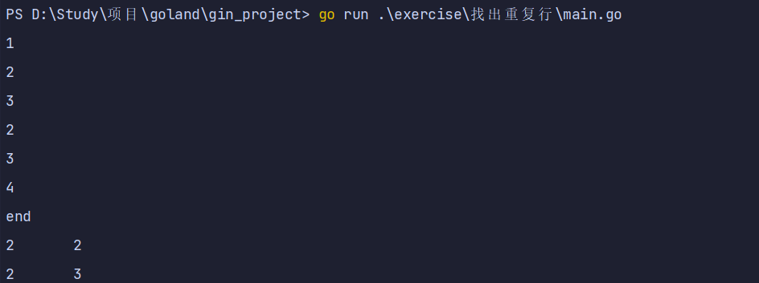
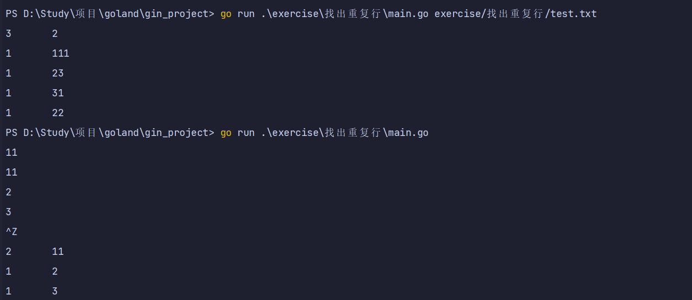

从标准输入中读取数据
1.if语句条件两边也不加括号，但是主体部分需要加{}
2.map存储了键/值（key/value）的集合，对集合元素，提供常数时间的存、取操作，map[string]int ==> key的类型string和value的类型int
3.内置函数make创建空map, counts := make(map[string]int)
4.bufio包Scanner类型读取输入并将其拆成行或单词input := bufio.NewScanner(os.Stdin) 短变量声明一个input变量
5.调用input.Scan()，读入下一行，在读到一行时返回true，不再有输入时返回false
6.fmt.Printf函数对一些表达式产生格式化输出
注意：
go语言中的input.Scan() 停止输入是
EOF
终端情况下请使用 ctrl+d
我是windows11使用 ctrl+z
或者增加判断条件输入end直接结束循环
文件的是直接
cat input | go run main.go
dup1,go
package main
import (
"bufio"
"fmt"
"os"
)
func test1() {
// 定义一个 map 对象 key:str value:int
counts := make(map[string]int)
input := bufio.NewScanner(os.Stdin)
for input.Scan() {
if input.Text() == "end" {
break
}
counts[input.Text()]++
}
for line, n := range counts {
if n > 1 {
fmt.Printf("%d\t%s\n", n, line)
}
}
}
func main() {
test1()
}

从文件中读取数据
1.os.Open函数返回两个值。第一个值是被打开的文件(*os.File）
2.os.Open返回的第二个值是内置error类型的值，如果不等于内置值nil（NULL）说明出错了
3.使用fmt.Fprintf表示打印任意类型默认格式值的动词%v
4.map是一个由make函数创建的数据结构的引用，作为参数传递给某函数时相当于引用传递
package main
import (
"bufio"
"fmt"
"os"
)
func test1() {
// 定义一个 map 对象 key:str value:int
counts := make(map[string]int)
input := bufio.NewScanner(os.Stdin)
for input.Scan() {
if input.Text() == "end" {
break
}
counts[input.Text()]++
}
for line, n := range counts {
if n > 1 {
fmt.Printf("%d\t%s\n", n, line)
}
}
}
func test2() {
// 创建 map
counts := make(map[string]int)
// 切片截取命令行输入数据
files := os.Args[1:]
// 判断命令行是否输入文件名
if len(files) == 0 {
// 无输入则调用 countLines 方法
countLines(os.Stdin, counts)
} else {
// 输入则打开文件 支持多个文件
for _, arg := range files {
f, err := os.Open(arg)
if err != nil {
fmt.Println(os.Stderr, "dup2: %v\n", err)
}
// 判断有无重复数据
countLines(f, counts)
// 关闭文件
err = f.Close()
if err != nil {
return
}
}
}
for line, n := range counts {
// 打印 counst数据
fmt.Printf("%d\t%s\n", n, line)
}
}
func countLines(f *os.File, counts map[string]int) {
input := bufio.NewScanner(f)
for input.Scan() {
counts[input.Text()]++
}
}
func main() {
test2()
}
多文件